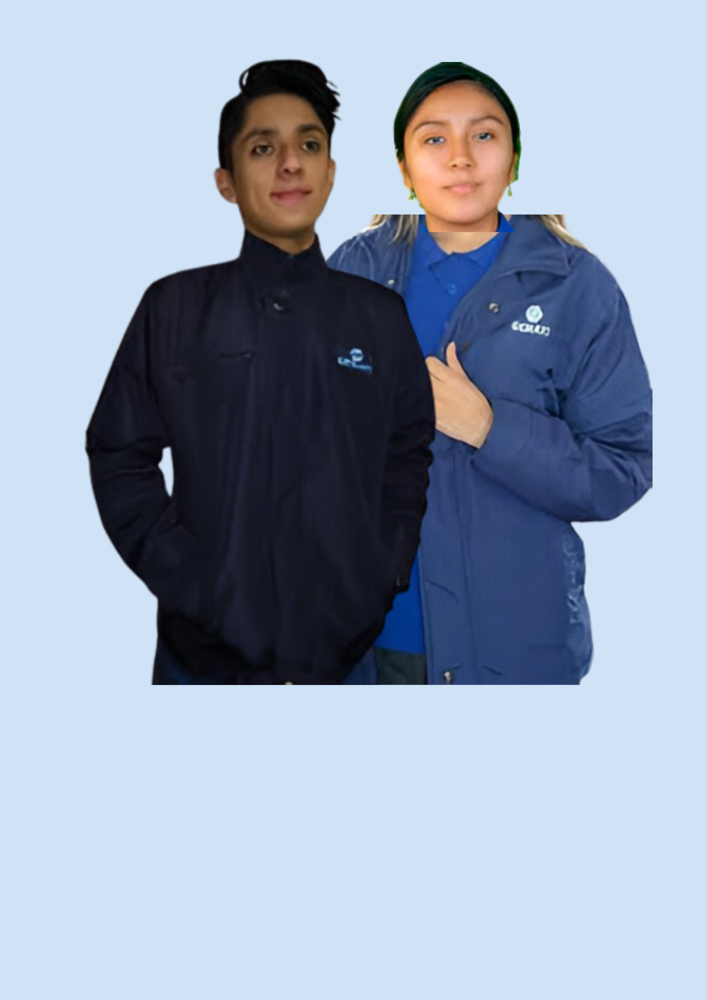

Clima del Día: Frío Senatino
Temperatura Baja

Hoy se presenta un día frío en SENATI. Se recomienda vestir con la
camisa y La Casaca oficial de SENATI, corbata, pantalón de vestir y
zapatos adecuados. Mantente abrigado durante tus actividades.
Recomendaciones para este día:
- Usa abrigo o suéter para mantenerte cálido
- Vístete con capas de ropa para mejor aislamiento
-
No olvides tu bufanda, guantes y gorro si vas a salir al aire libre
- Lleva contigo una botella de agua caliente o té
Volver al inicio